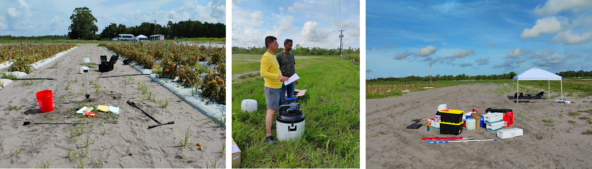

Events & Field Gallery
Project events
Project kickoff
Project startup and partner coordination.
Experimental-site visit
Field reconnaissance and
site-selection work for Tasks 1 and 2.
FGCU–UF planning workshop
Schedule review, procurement
updates, QAPP discussion, and site-selection planning.
Field gallery
